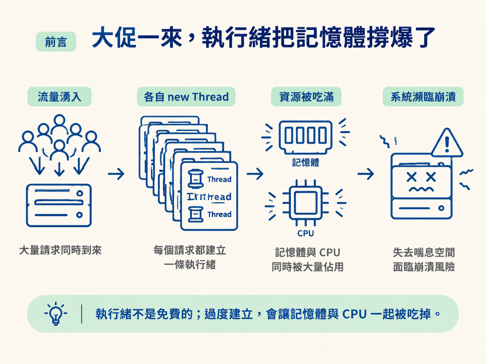
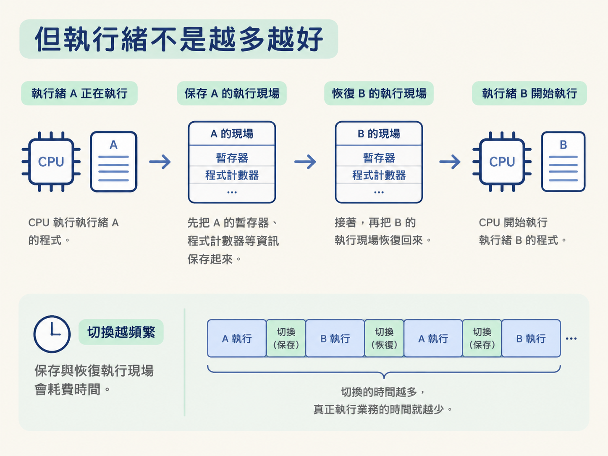

new Thread？池化與執行緒數設置這一節會從 new Thread 的真實成本出發，理解為什麼要使用執行緒池，並釐清三件事：池化解決了什麼問題、上下文切換為什麼會拖慢系統，以及 CPU 密集型與 IO 密集型任務該如何估算執行緒數。
平常遇到非同步需求時，很多人第一個念頭都是直接寫：
new Thread(() -> ...).start()
在測試環境裡，這樣做通常看不出問題。可是大促一到，流量突然衝高，服務卻可能直接因為 OutOfMemoryError 掛掉。回頭看程式碼，業務邏輯似乎沒有錯，問題到底藏在哪裡？
關鍵在於：執行緒不是免費的。每建立一條執行緒，作業系統都要為它準備資源；如果每個請求都各自建立一條執行緒，流量一高，就可能變成幾萬條執行緒同時存在。記憶體和 CPU 會一起被吃掉，系統也就失去了喘息的空間。

所以，這一節不只要介紹執行緒池是什麼，還要先把兩個問題想清楚：建立執行緒到底要付出什麼成本？執行緒是不是越多，工作就做得越快？理解這兩點，才會知道「池化」為什麼是合理的解法，以及執行緒數該怎麼設置。
先釐清動機，才能知道多執行緒是在解決問題，還是在製造問題。一般來說，多執行緒主要有三個用途。
第一，是充分利用多核心 CPU。現在的伺服器幾乎都有多個核心。如果程式始終只用一條執行緒，就像工廠裡只有一名工人，其他工作台只能空著。多執行緒可以讓多個核心同時處理工作，縮短任務的總執行時間。
第二，是處理 IO 阻塞。實際的服務很少只有純計算，通常還要查資料庫、呼叫 RPC，或讀寫檔案。這些操作常常有一段等待時間，CPU 在這段時間其實沒有事情可做。
如果只有一條執行緒，它卡在等待資料庫回應時，其他工作也只能一起等。若有多條執行緒，就可以讓執行緒 A 等資料庫的同時，執行緒 B 繼續處理其他計算，提升單位時間內能服務的請求數量。
第三，是提升回應速度與使用體驗。例如 GUI 或 Web 服務中，使用者點下「下載」後，如果主執行緒親自執行整個下載流程，畫面就可能被卡住。若由主執行緒負責回應操作，再交給另一條執行緒處理耗時的下載工作，介面就能維持流暢。
這三個目的，就是多執行緒值得存在的理由：用好多核心、不要讓 CPU 在 IO 等待時閒著，以及避免耗時工作阻塞主要回應流程。
既然多開執行緒有好處，是不是執行緒越多，速度就越快？答案是否定的。執行緒一多，系統就會遇到一個很現實的成本：上下文切換（context switch）。
CPU 在同一個時間點只能執行一條執行緒。當它要從執行緒 A 切換到執行緒 B，必須先保存 A 的執行現場，例如暫存器和程式計數器；接著，再把 B 的執行現場恢復回來。

這個「先保存、再恢復」的過程本身就需要時間。如果執行緒數量遠遠超過 CPU 核心數，作業系統就得不斷在各條執行緒之間切換。最後，CPU 花在切換上的時間變多，真正執行業務程式碼的時間反而變少，效能自然可能不升反降。
除了切換時間，還有另外兩項成本：
因此，目標不是無限制增加執行緒，而是讓執行緒數量控制在一個合理範圍：既能讓 CPU 有足夠工作，又不會因為頻繁切換、記憶體消耗和鎖競爭而拖慢整個系統。
new Thread 本身就很「重」除了執行緒數量可能失控之外，反覆建立執行緒這個動作本身也不便宜。每建立一條執行緒，作業系統都要分配記憶體、登記核心物件；任務完成後，執行緒被銷毀，還要再回收這些資源。
如果只是為了一個很小的任務，就完整支付一次建立與銷毀的成本，那麼管理執行緒的開銷甚至可能比任務本身還高。這就像每接一通電話都臨時招募一名客服，電話結束後立刻解雇；真正忙的時間還沒開始，招募和解雇就先花掉一大堆力氣。
更麻煩的是，這種做法很難控制。當程式採用「來一個請求，就開一條執行緒」的模式時，請求量是由外部流量決定的。平常可能只有幾十個請求，尖峰時卻可能突然變成幾萬個。這些執行緒同時建立，可能讓 CPU 過載，也可能把記憶體直接撐爆，而程式本身沒有一個可以踩下去的煞車。
執行緒池就是為了處理上述問題而出現的。它的核心概念是：不要每次要用才建立，使用完也不要立刻丟掉；先準備一批執行緒，讓它們反覆執行任務。
可以把執行緒池想成一個平常就有人待命的客服中心。客服代表執行緒，電話代表任務。客服接完一通電話後不會離職，而是回到座位，繼續接下一通。如果電話突然太多，也不會緊急招募幾千名新客服，而是先讓來電進入等待佇列。
直接 new Thread |
使用執行緒池 |
|---|---|
| 每來一個任務就建立一條執行緒 | 先準備執行緒，讓它們反覆執行任務 |
| 任務完成後銷毀執行緒 | 任務完成後回到池中等待下一個任務 |
| 請求量一高，執行緒數可能失控 | 可以限制併發數，讓多出的任務進入阻塞佇列 |
具體來說，執行緒池有三個主要好處。
第一，降低資源消耗。透過複用執行緒，可以省下反覆建立與銷毀的成本。
第二，提高回應速度。任務到達時，如果池裡已經有空閒執行緒，就能直接開始執行，不必先等待建立執行緒。這就像車已經停在門口等你，而不是每次出門才臨時叫車。
第三，提高可管理性。執行緒是有限資源，放任它無限制成長，最後很可能拖垮系統。執行緒池可以透過參數限制最大併發量，並集中進行分配、調優與監控，像替系統加上一道防洪堤。
有了執行緒池，下一個問題就是池子該設多大。這沒有一個適用所有場景的固定數字，因為任務的瓶頸可能完全不同：有些任務忙著計算，有些任務則大部分時間都在等待 IO。
CPU 密集型任務包含大量計算、加解密、影片壓縮和正則匹配。這類任務的特徵是 CPU 大部分時間都處於忙碌狀態。
這時不適合開太多執行緒。經驗公式是：
CPU 核心數 + 1
多出來的 1 可以視為備用位置：當某條執行緒偶爾因為缺頁中斷等原因暫停時，另一條執行緒可以補上，避免 CPU 短暫空轉。
這種情況很像超商的結帳櫃檯。櫃檯數量有限，顧客都需要在櫃檯前結帳；如果硬塞更多店員到同一個櫃檯，店員之間反而會互相卡住，並不會讓結帳速度一直增加。
IO 密集型任務包含 Web 請求、資料庫查詢和 RPC 呼叫。執行緒大部分時間都在等待結果，CPU 反而常常處於閒置狀態。
這時可以配置比 CPU 核心數更多的執行緒，讓執行緒 A 等待 IO 時，CPU 能轉去處理執行緒 B。粗略公式是：
2 × CPU 核心數
如果希望估算得更精確，也可以使用：
CPU 核心數 × (1 + 等待時間 ÷ 計算時間)
等待時間占比越高，需要的執行緒通常就越多，因為要靠更多執行緒填補 CPU 等待 IO 時留下的空檔。
這種情況比較像餐廳的外場服務生。服務生有不少時間是在等廚房出餐、等客人點餐，因此一個人可以同時照顧好幾桌。只要工作安排得當，多配置一些服務生，就能讓有人等待時，其他人繼續服務別桌。
所以，「執行緒數要設多少」不能脫離任務類型單獨回答。先判斷任務是忙著算，還是忙著等，再選擇合適的估算方式。
執行緒池要解決的，是 new Thread 成本高又不可控的問題。多執行緒主要有三個目的：充分利用多核心、在 IO 等待時讓 CPU 處理其他工作，以及提升回應速度。不過執行緒不是越多越好，因為上下文切換、約 1MB 的棧記憶體與鎖競爭都會帶來成本。池化透過複用執行緒降低資源消耗、加快任務回應，並集中管理最大併發量。執行緒數則要看任務類型：CPU 密集型可用「核心數 + 1」估算，IO 密集型可用「2 × 核心數」，或依等待時間與計算時間的比例進一步估算。
到這裡，執行緒池的必要性就清楚了：它不是單純把執行緒集中放在一起，而是用複用、排隊與數量限制，替系統管理一項有限資源。接下來要看的，就是這個池具體長什麼樣子。JDK 使用 ThreadPoolExecutor 實作執行緒池，而它的建構子有七個參數。下一節會用銀行網點的比喻，把這七個參數一次串起來。